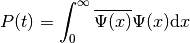
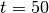
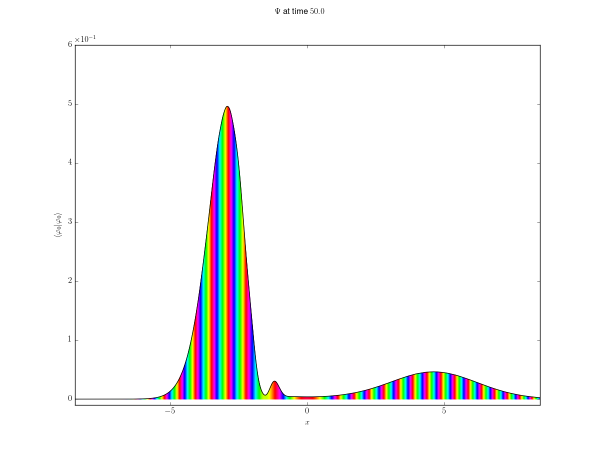

Computing tunneling probabilities¶
Assume we performed a simulation with the Eckart potential and an initial
Gaussian wavepacket coming from the far left. There is a ready-made example
setup bundled with WaveBlocks. The Eckart potential models some kind of
tunneling at a smooth barrier. It is therefore natural to ask for the tunneling
probability in dependence of time. The maximum of the potential  is at 0 and we compute the norm of the part of
is at 0 and we compute the norm of the part of  that tunneled
onto the right side:
that tunneled
onto the right side:

There is no generic python script doing this for us. The script ComputeNorms.py
only computes the integral over the whole space. This is clearly not applicable
here. But with a few lines of python code, possibly entered at an interactive python
shell or ipython notebook we can find  . In the following we show
step by step how to do it.
. In the following we show
step by step how to do it.
First load the scientific libraries and WaveBlocksND:
from numpy import *
from matplotlib.pyplot import *
from WaveBlocksND import *
Then assume the simulation result file is located at ~/Eckart_Tunneling/paper/phi0/simulation_results.hdf5. We create an IOManager instance and open the file
IOM = IOManager()
IOM.open_file("~/Eckart_Tunneling/paper/phi0/simulation_results.hdf5")
Load the simulation parameters, this is essentially the content of the configuration script:
PA = IOM.load_parameters()
Next we get a fresh BlockFactory instance allowing us to easily create some of the more complicated objects, given the simulation parameters:
BF = BlockFactory()
An empty new wavepacket with the initial values set for  , the parameter
set
, the parameter
set  and the coefficients
and the coefficients  . Note that the block factory automatically
creates the necessary BasisShape that matches the initial values:
. Note that the block factory automatically
creates the necessary BasisShape that matches the initial values:
HAWP = BF.create_wavepacket(PA["wp0"])
Our integration domain:
x = linspace(0, 20, 2**11).reshape((1,-1))
A new WaveFunction object. We will use its norm() method for evaluating the integral. At this point we can attach the grid to it:
WF = WaveFunction({"dimension":1, "ncomponents":1})
WF.set_grid(GridWrapper(x))
Load the so called time grid, this is an array with all time steps at which saved the simulation:
tg = IOM.load_wavepacket_timegrid()
Storage space for the tunneling norms at each time step:
tun_no = []
Now loop over all time steps, First load and set the wavepacket parameters  and coefficients
and coefficients  , then evaluate the wavepacket of our truncated computational
domain x. Put these values into the WF object and tell it to compute the norm:
, then evaluate the wavepacket of our truncated computational
domain x. Put these values into the WF object and tell it to compute the norm:
for step in tg:
Pi = IOM.load_wavepacket_parameters(timestep=step)
Ci = IOM.load_wavepacket_coefficients(timestep=step)
HAWP.set_parameters(Pi)
HAWP.set_coefficients(Ci)
psi = HAWP.evaluate_at(x, prefactor=True)
WF.set_values(psi)
no = WF.norm()
tun_no.append(no)
Convert the python list to a numpy array for easier handling:
tun_no = array(tun_no)
At this point we have computed all the values . What remains
is plotting. But first we create a TimeManager such that we can
easily compute the physical times corresponding to out time steps it tg:
TM = TimeManager(PA)
time = TM.compute_time(tg)
Ok, let’s plot the values:
figure()
plot(time, tun_no**2)
grid(True)
xlabel(r"$t$")
ylabel(r"$\int_0^\infty \overline{\Psi(x)} \Psi(x) \mathrm{d}x$")
savefig("tunneling_probability_packet.png")
And do not forget to close the hdf5 file at the end:
IOM.finalize()
This is the plot we got:

The values could make sense given how the wavefunction looks like at time :
{kind=link}
If we use the fourier algorithm instead of wavepackets to perform the same simulation, then the process would differ in a few aspects. We show here the script performing the same computation as above:
from numpy import *
from matplotlib.pyplot import *
from WaveBlocksND import *
IOM = IOManager()
IOM.open_file("~/Eckart_Tunneling/paper/phi0/simulation_results.hdf5")
PA = IOM.load_parameters()
Load the grid we used for representing the wavefunction during the simulation:
G = IOM.load_grid(blockid="global")
Get all grid nodes  by some numpy magic:
by some numpy magic:
indices = G >= 0
x = G[indices].reshape((1,-1))
This WaveFunction object will hold the tunneled part:
WFhalf = WaveFunction({"dimension":1, "ncomponents":1})
WFhalf.set_grid(GridWrapper(x))
Now loop over all time steps, load the wavefunction, cut off the part corresponding to the negative grid nodes and compute the norm:
tun_no = []
for step in tg:
values = IOM.load_wavefunction(timestep=step)
values_tun = values[:,indices]
WFhalf.set_values(values_tun)
no = WFhalf.norm()
tun_no.append(no)
tun_no = array(tun_no)
Finally, plot the values:
TM = TimeManager(PA)
time = TM.compute_time(tg)
figure()
plot(time, tun_no**2)
grid(True)
xlabel(r"$t$")
ylabel(r"$\int_0^\infty \overline{\Psi(x)} \Psi(x) \mathrm{d}x$")
savefig("tunneling_probability_fourier.png")
IOM.finalize()
and get: